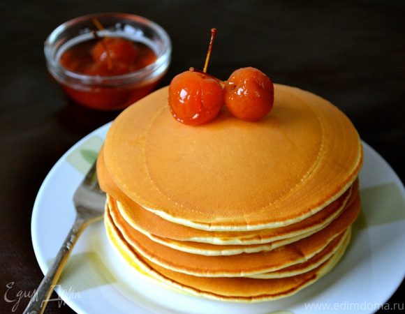
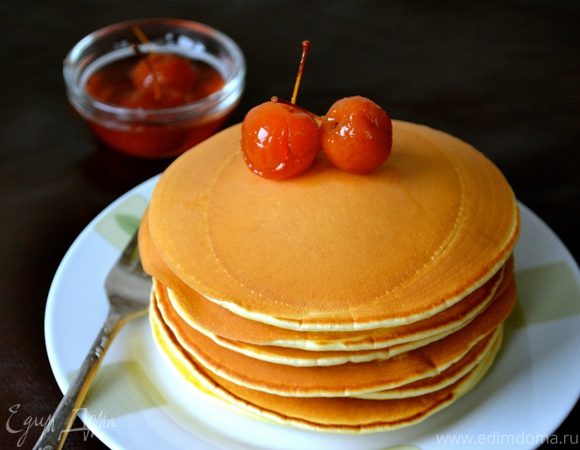

Блины на кефире
Ингридиенты:
1)Кефир-2 стакана
2)Пшеничная мука-2 стакана
3)Куриное яйцо-2 штуки
4)Сода-½ чайной ложки
5)Растительное масло-3 столовые ложки
6)Кипяток-1 стакан
Приготовление:
1) Муку, кефир и яйца перемешать и взбить венчиком. В стакан крутого кипятка бросить соду ,быстро перемешать и вылить в тесто, перемешать и дать постоять 5 минут.
2. Добавить растительное масло и выпекать блины.
 
